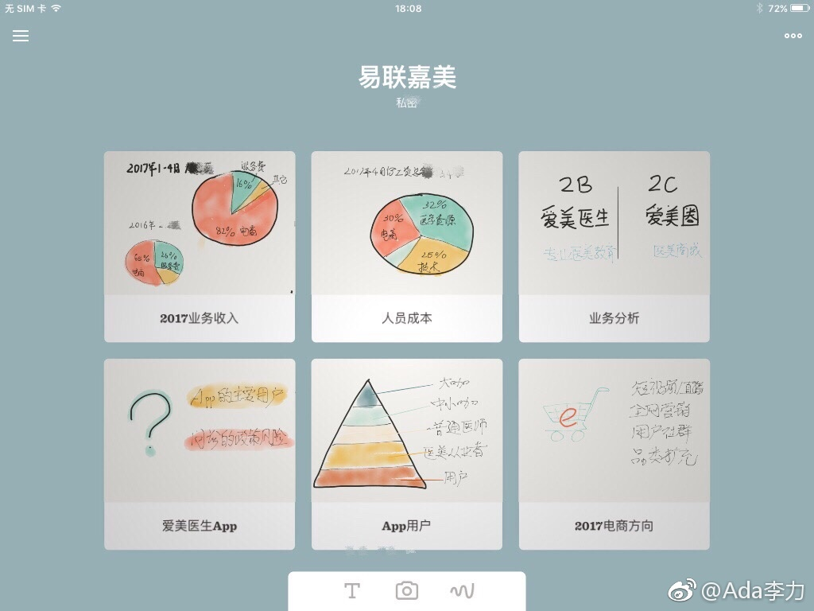

#创业#有同事加入公司之前对皮肤美容就很有爱好，自学了很多专业知识。新加盟同事脸上有痘痘等问题，被同事诊断出有扁平疣，催促她去医院皮肤治疗下。去了，果然是扁平疣，做了冷冻处理。--- 这算是工作福利之一吧。
#创业#做一份文档，花了大半天时间，主要花在熟悉作图工具，转换图片文档格式，调整演示效果上。如果已有大概框架和思路，用熟悉的PPT工具做，用之前的习惯做，十分钟足以，就是堆砌数字和文字嘛。现在尝试让自己学习更小白的表达方式，听众越容易懂越好。从做PPT开始练吧。 
在考虑给#姣姣#买个笔记本，Surface Book的低配跟MacBook Air低配的价格差不多，刚开始更倾向买Surface, 有些国内软件必须在Windows上用，可是下午用iPhone手机操作了做文档，做图，传送数据之后，觉得还是要买苹果笔记本，至少PC到移动端，应用之间的互通互联，苹果系统的优势无可比拟。